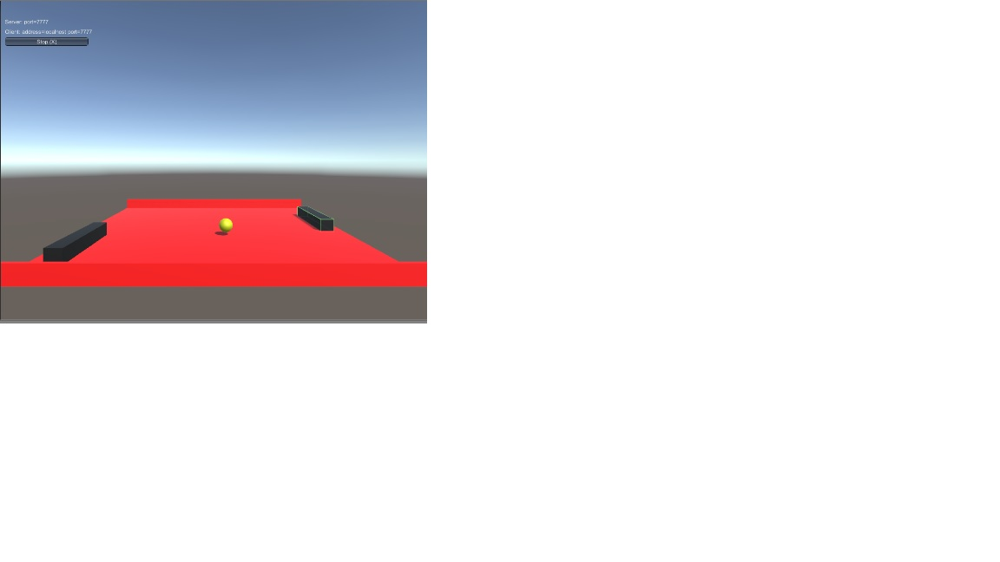

Ping Pong

Voor de 2e oefenopdracht die we voor ons portfolio moeten maken.
Heb ik gekozen voor de multiplayer ping-pong opdracht.
Zoals het al wordt gezegt is het met ze tweeën te spelen via het ingebouwde netwerk systeem van Unity.
Het was leuk en weer eens iets anders te maken. Ik had namelijk nog nooit deze feature van unity gebruikt.
Software : Unity
Programmeer Taal : C-sharp
Vertical Slice 3D
In de 2e moesten wij kiezen uit twee games waarbij we een vertical slice moesten maken.
Voor de 3D variant hebben wij gekozen voor Kingdom Hearts. Hierbij moesten wij het combat-
systeem namaken.
Software : Unity,Blender,Photoshop
Programmeer Taal : C-sharp
Vertical Slice 2D
In de 2e moesten wij kiezen uit twee games waarbij we een vertical slice moesten maken.
Voor de 2D variant hebben wij gekozen voor Cuphead. Hierbij hebben wij een deel uit de campaign nagemaakt.
Software : Unity,Blender,Photoshop
Programmeer Taal : C-sharp
Endless Runner
In de 2e moesten wij aan het begin van het jaar een endless runner maken.
Wij hebben gekozen voor de game Dino Run.
Software : Unity,Blender,Photoshop
Programmeer Taal : C-sharp
Braid Rewind Mechanic
Om even bezig te zijn leek het mij leuk om de rewind mechanic na te maken uit Braid.
Die zowel ook wordt gebruikt in Prince of Persia Sands of Time.
Software : unity
Programmeer Taal : C - sharp